Lotus is a sweet, polite girl who
enjoys the simple things in life and doesn't
ask for too much just whatever
love you're willing to give her!
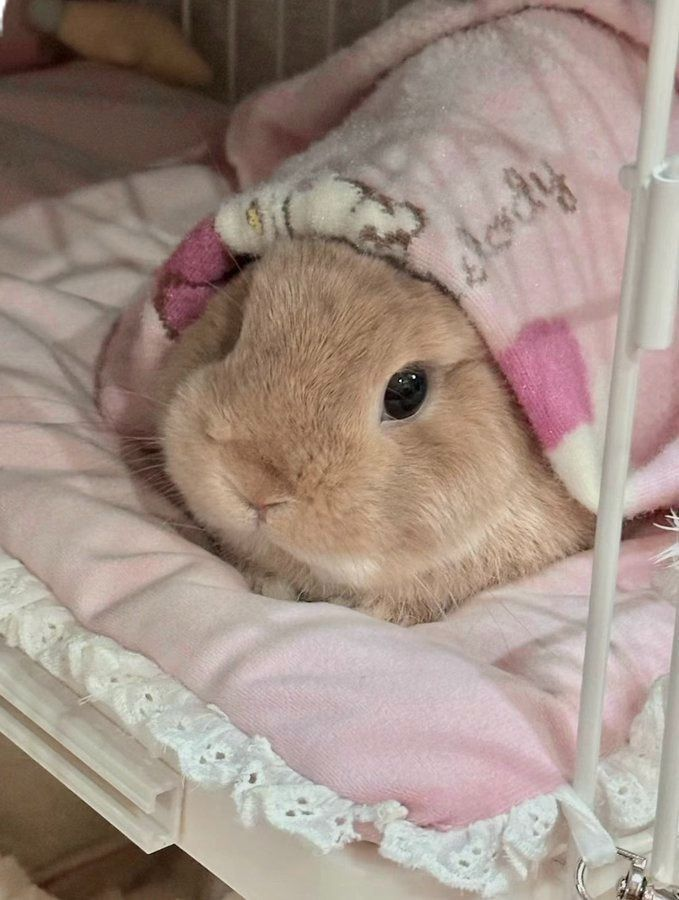
Avyaan
Age: 1.5 years
Sex: ♂
Breed: Netherland Dwarf
Avyaan is looking for an experienced adopter who understands when he is
feeling overstimulated. He can be a bit mouthy and give gentle play
bites when he feels done
with being pet or if he's in a playful mood.
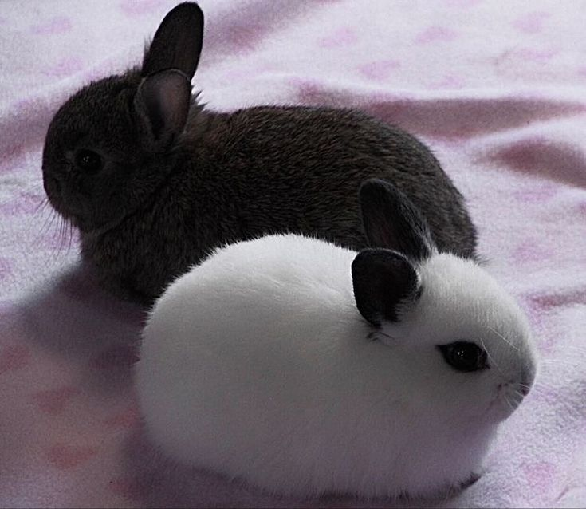
Yin & Yang
Age: 1 month
Sex: ♀, ♀
Breed: Netherland Dwarf
Yin & Yan are inseparable sibling bunnies,
hopping through life side by side.
Full of love and playfulness,
they're seeking a forever home that will cherish them together!.
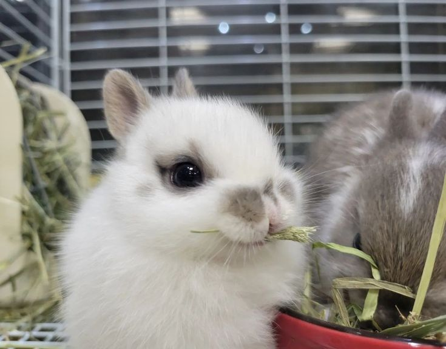
Lola
Age: 3 weeks
Sex: ♀
Breed: English Spot
Baby Lola came to us as an orphan, but her sweet, playful
nature shines through. She's looking for a loving home
where she can grow and hop into happy days!
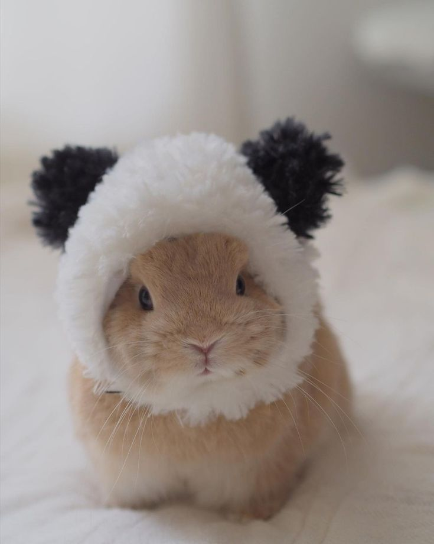
Thumper
Age: 7 months
Sex: ♂
Breed: Netherland Dwarf
Thumper is a playful bunny who loves to dress up,
and loves to be spoiled or else he WILL thump!
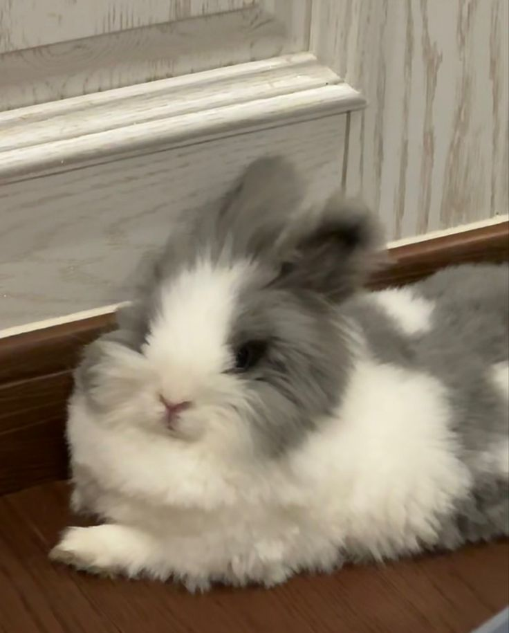
Oreo
Age: 4 months
Sex: ♂
Breed: Angora
If you're looking to adopt the sweetest angel,
look no further than Oreo!
Adopters should know that Angelito came into our
care with evidence of severe dental disease,
but other tan that he's a
happy bunny that looks forward for his new home
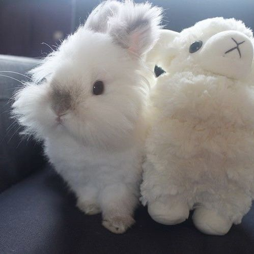
Himi
Age: 7 months
Sex: ♀
Breed: Lionhead
Himi is a shy, timid bunny who finds comfort in her plushy,
her constant companion. She's searching for a quiet,
loving home where she can feel safe and cherished.
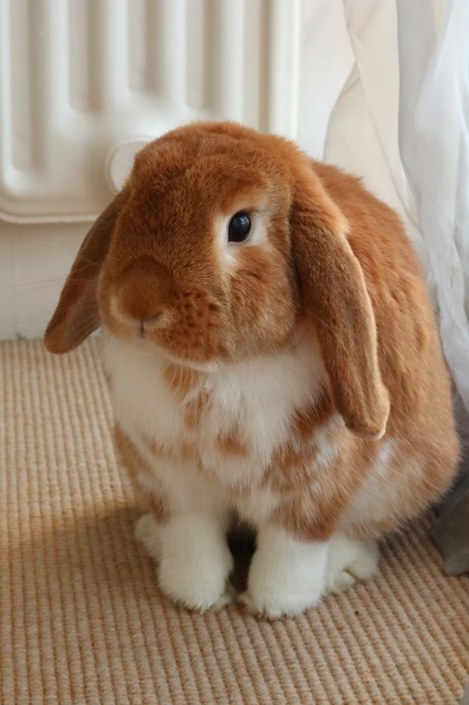
Toast
Age: 5 years
sex: ♀
Breed: Holland Lop
Toast, one of our senior bunnies, has a heart full of love despite a past of neglect.
This sweet bunny is searching for a forever home and a loving owner.
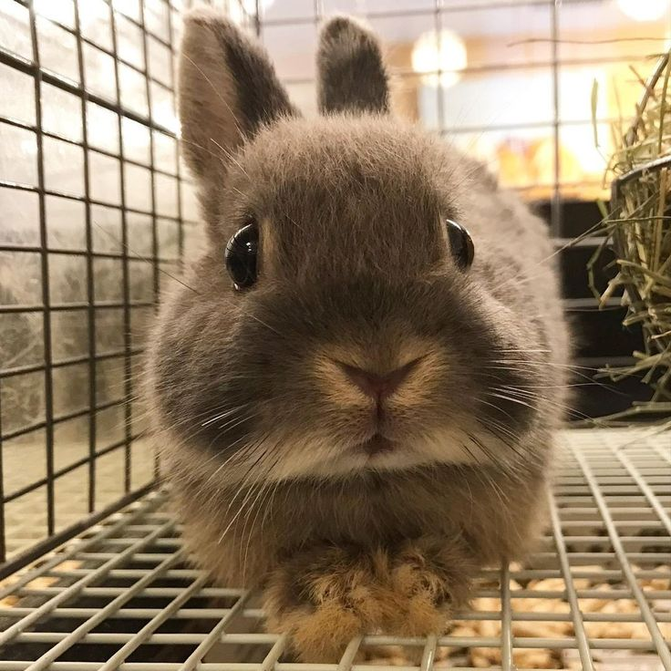
Cinnamon
Age: 1.5 years
Sex: ♂
Breed: mini rex
Cinnamon is a laid-back, sweet-natured bunny with a soft, cinnamon-colored coat.
He's gentle, friendly, and loves a good
cuddle session, making him the perfect companion for a loving home.
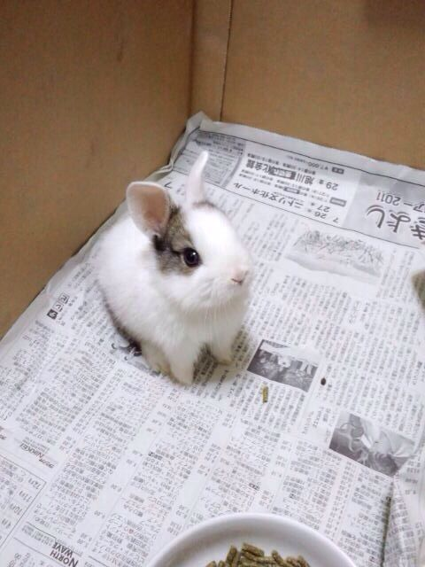
Sugar
Age: 3 week-1 month
Sex: ♂
Breed: English spot
Sugar was found frail and alone on the streets, but with kindness and patience,
he's learning to trust again.
he craves affection and will reward your love with endless sweetness.
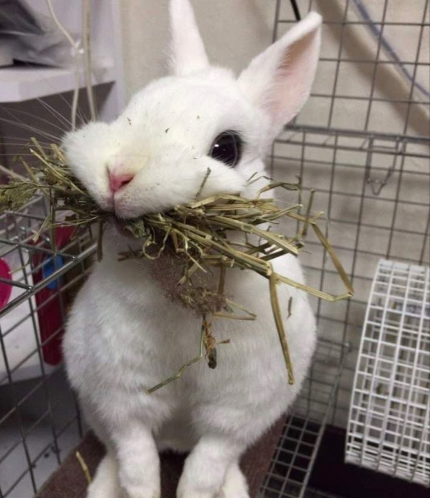
Stormy
Age: 3 years
Sex: ♀
Breed: Dwarf Hotot rabbit
Stormy is bunny with a big personality! Full of character,
she's independent, curious, and always ready for adventure.
She's looking for a home that can match her lively spirit!
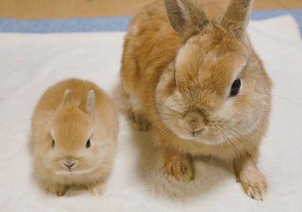
Cupid & Bow
Age: 1 year (mom), 3 weeks (baby)
Sex: ♀, ♂
Breed: new zealand
Cupid is a caring mom bunny, and Bow is her adorable little baby.
They're a close-knit pair,
looking for a calm and loving home where they can stay together and thrive.
 Adopt your furry friend
Adopt your furry friend